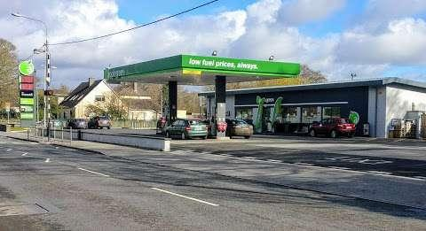
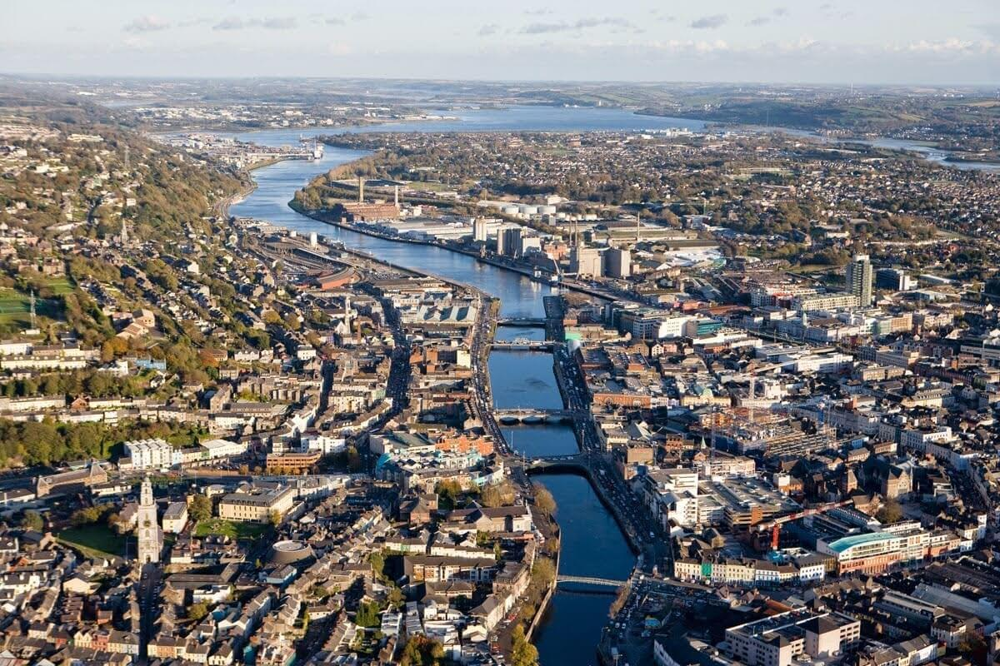
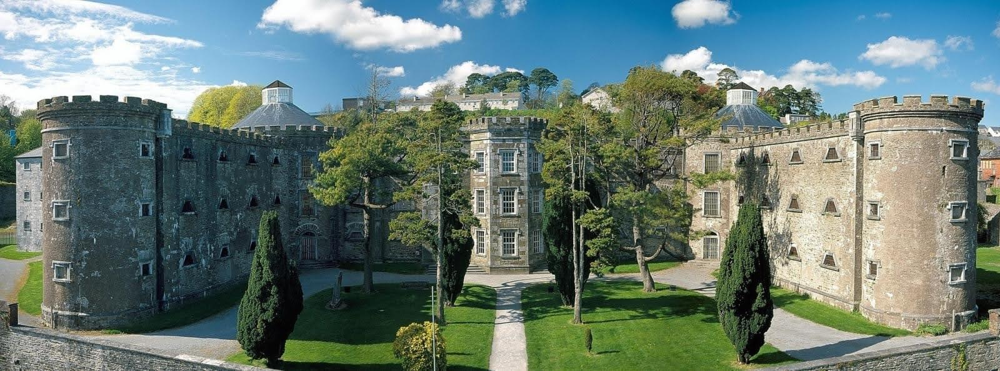
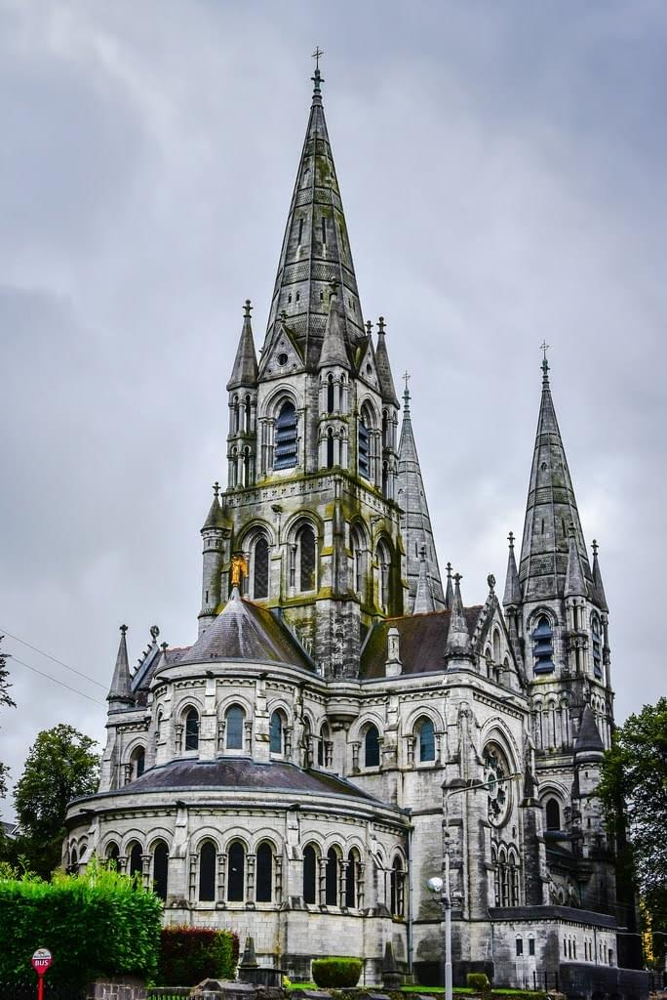
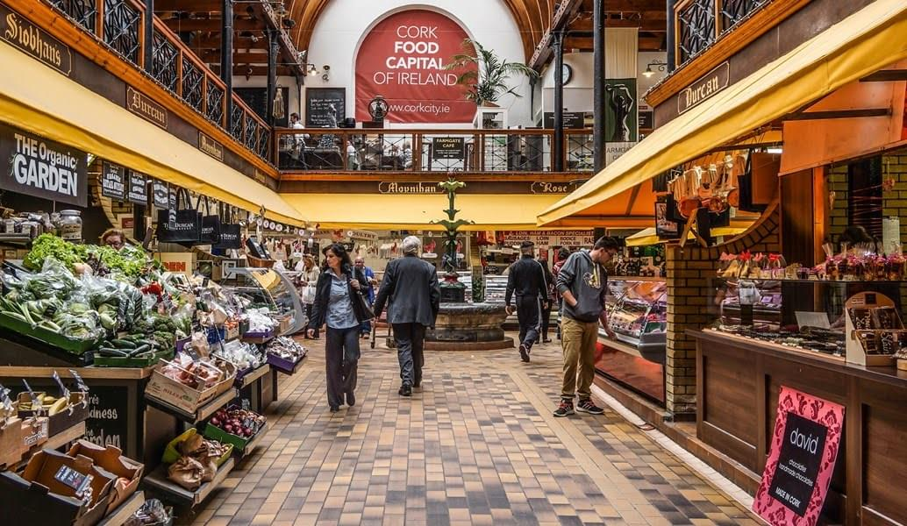
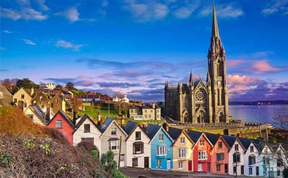
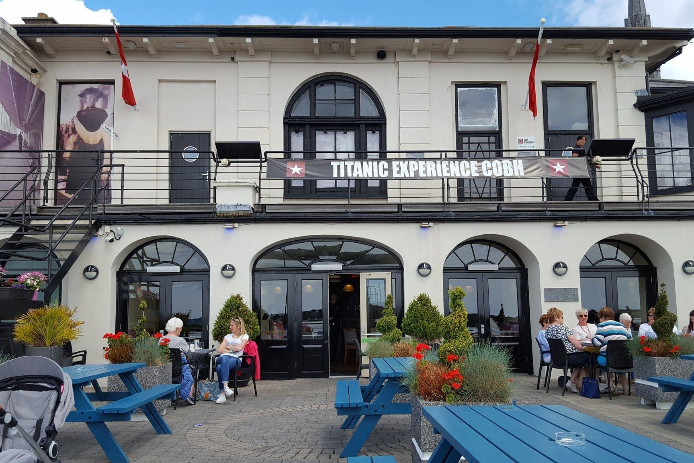
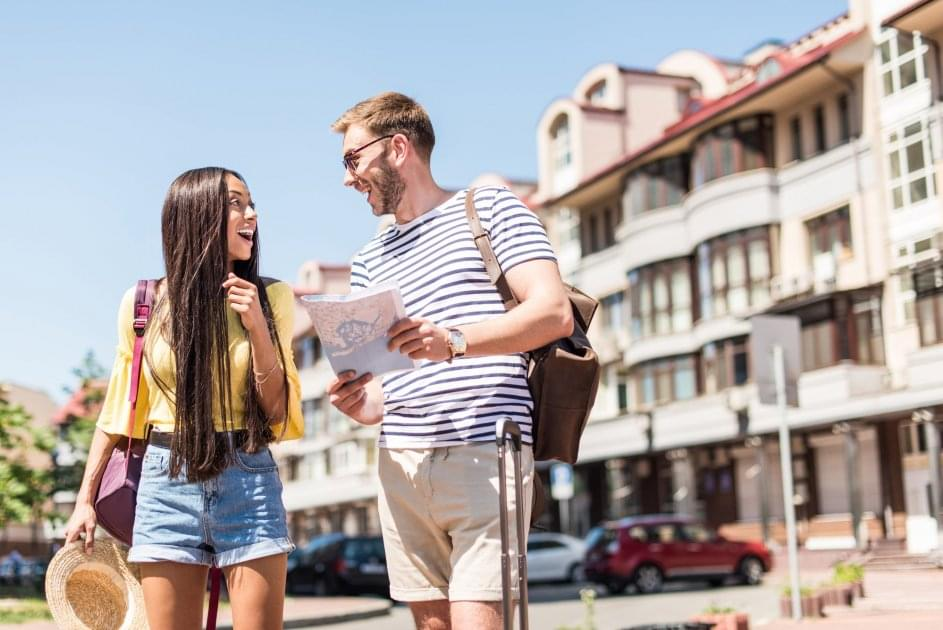

Друзі, пропонуємо вам подорож до півдня цього чудового остріва, а саме до міст Корк, Ков і Кашел.
Ми самостійно орендували автобус, наша подорож без екскурсовода.
Наш маршрут

Виїзджаємо 27.05 в суботу в 07.30 з АЗС Applegreen R42NY54.
Важливо прийти вчасно, щоб все встигнути без поспіху.
В дорозі до Корку (Cork) ми проведемо приблизно 2-2,5 години
В місті ми самостійно будемо гуляти до 14-30.
Потім ми десь 40 хвилин їдемо до міста Ков (Kobh) і гуляємо там 1,5 години.
На зворотному шляху до дому ми ще заїдемо до міста Кашел (Cashel).
І десь близько к 21.00 плануємо бути в Birr.
Місто корк

що подивитись:
Cork City Gaol Музей-в'язниця. Нині на місці жоночої в'язниці діє не лише музей, а й унікальний інтерактивний театр. Воскові фігури, розставлені в камерах і коридорах, точно відображають епізоди з життя в'язнів. Вартість квитка: дорослий-10 €, студентський - 8.5 €, дитячий - 6 €. Аудіогід російською мовою 2 €. Веб сайт: https://corkcitygaol.com/.

Daly's Bridge через міст переходимо на инший бік річки.
Парк Фицджералд - гуляти, милуватися.
Cork Public Museum - безкоштовно.
Ірландський національний університет, Корк. Будівля коледжу розташувалася на краю скелі, з якої відкривається мальовнича панорама на річку Лі. Гарний парк.
The Glucksman Художній музей - вхід вільний.
Собор святого Фин Барра (St. Fin Barre’s Cathedral)

Elizabeth Fort. Відвідування безкоштовне. Зі стін цитаделі відкривається чудовий вид на місто.
English market. Милуватися ринком можна не лише зовні, а й зсередини. Сьогодні The English Market продовжує радувати відвідувачів різноманітністю та великою кількістю продовольчих товарів. Покупки тут роблять не тільки всі імениті кухарі міста, а й робила сама королева Єлизавета II (принаймні, так кажуть).

Прогулянки та шопінг за вашим бажанням.
Місто ков

Ков – морський порт на півдні Ірландії. Місто невелике, але симпатичне і затишне. Старовинні споруди в ньому перемежовуються із сучасними, деякі будинки забарвлені у різні кольори, що створює святковий настрій. Найбільша будівля Кова - собор Святого Колмана, який стоїть на пагорбі і височить над усім містом.
Ков має відношення до двох знаменитих океанських лайнерів. Він був останнім портом, до якого заходив Титанік. У місті є музей, присвячений його трагічній долі. А «Луїзітанія» була торпедована за 45 миль від міста — у Кові поховано 100 її пасажирів. Крім того, саме звідси вирушали судна з ірландськими переселенцями до США.
що подивитись:
St. Colman's Cathedral, Cobh - собор
"Deck of Cards" Houses - різнокольорові будинки
Titanic Experience Cobh – музей, який розкриває нам завісу таємничого краху Титаніка.

Прогулятися набережною.
Місто Кашел
В місті Кашел (Cashel) ми зовні подивимося на Rock of Cashel та сфотографуємось на його фоні.
Рекомендації:

З собою беремо ланч та воду і обов'язково гарний настрій.
Одягайтеся за погодою.
Для пошуку туалету рекомендую використовувати програму